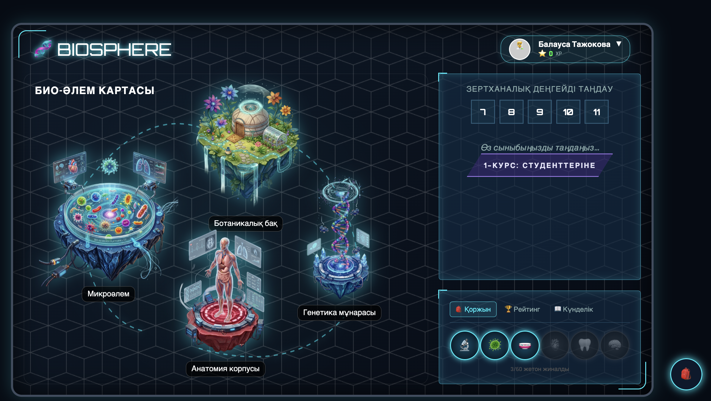

Магистр, оқытушы-лаборант. Биологиялық жүйелердің физика-химиялық негіздерін, виртуалды оқыту платформаларын және ЖИ-әдістерін зерттеуші.
Биология ғылымы бойынша докторантурада білім алып, биологиялық жүйелердің физикалық негіздерін, жасушалық және молекулалық процестерді заманауи эксперименттік, есептеу және цифрлық әдістер арқылы зерттеу. Биофизика, молекулалық биология, вирусология, паразитология, астрономия және астробиология тоғысындағы пәнаралық ғылыми жобаларға қатысу.
Жұмыстың мақсаты: Сасықкөл көліндегі кейбір кәсіптік балықтардың қазіргі кездегі паразиттерінің түр құрамы мен көлдегі балық өнімділігіне әсер ететін инвазиялық аурулардың патогенді қоздырғыштарын анықтау.
Нәтижесі: Мөңке балығы паразиттерінің сапалық және сандық көрсеткіштері, доминантты түрлері мен локализациясы анықталып, көлдің эпизоотологиялық жағдайына толықтай талдау жасалды.
Зерттеу барысында виртуалды зертханалық платформа әзірленіп, цифрлық білім беру ортасын жобалау және оның білім алушылардың оқу нәтижелеріне тигізетін тиімділігі бағаланды.
